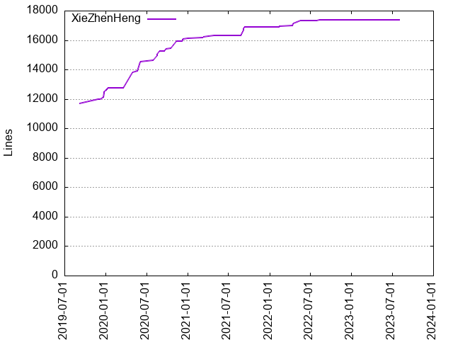
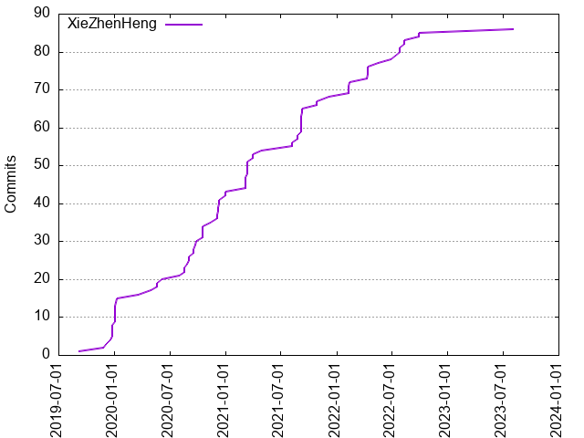

Authors
| Author | Commits (%) | + lines | - lines | First commit | Last commit | Age | Active days | # by commits |
|---|
| XieZhenHeng | 86 (100.00%) | 17386 | 5375 | 2019-09-05 | 2023-08-03 | 1428 days, 4:57:22 | 50 | 1 |


| Month | Author | Commits (%) | Next top 5 | Number of authors |
|---|
| 2023-08 | XieZhenHeng | 1 (100.00% of 1) | | 1 |
| 2022-09 | XieZhenHeng | 2 (100.00% of 2) | | 1 |
| 2022-08 | XieZhenHeng | 2 (100.00% of 2) | | 1 |
| 2022-07 | XieZhenHeng | 3 (100.00% of 3) | | 1 |
| 2022-06 | XieZhenHeng | 1 (100.00% of 1) | | 1 |
| 2022-05 | XieZhenHeng | 1 (100.00% of 1) | | 1 |
| 2022-04 | XieZhenHeng | 4 (100.00% of 4) | | 1 |
| 2022-02 | XieZhenHeng | 4 (100.00% of 4) | | 1 |
| 2021-12 | XieZhenHeng | 1 (100.00% of 1) | | 1 |
| 2021-10 | XieZhenHeng | 2 (100.00% of 2) | | 1 |
| 2021-09 | XieZhenHeng | 7 (100.00% of 7) | | 1 |
| 2021-08 | XieZhenHeng | 4 (100.00% of 4) | | 1 |
| 2021-04 | XieZhenHeng | 3 (100.00% of 3) | | 1 |
| 2021-03 | XieZhenHeng | 8 (100.00% of 8) | | 1 |
| 2020-12 | XieZhenHeng | 8 (100.00% of 8) | | 1 |
| 2020-11 | XieZhenHeng | 1 (100.00% of 1) | | 1 |
| 2020-10 | XieZhenHeng | 4 (100.00% of 4) | | 1 |
| 2020-09 | XieZhenHeng | 6 (100.00% of 6) | | 1 |
| 2020-08 | XieZhenHeng | 3 (100.00% of 3) | | 1 |
| 2020-07 | XieZhenHeng | 1 (100.00% of 1) | | 1 |
| 2020-06 | XieZhenHeng | 1 (100.00% of 1) | | 1 |
| 2020-05 | XieZhenHeng | 2 (100.00% of 2) | | 1 |
| 2020-04 | XieZhenHeng | 1 (100.00% of 1) | | 1 |
| 2020-03 | XieZhenHeng | 1 (100.00% of 1) | | 1 |
| 2020-01 | XieZhenHeng | 7 (100.00% of 7) | | 1 |
| 2019-12 | XieZhenHeng | 6 (100.00% of 6) | | 1 |
| 2019-11 | XieZhenHeng | 1 (100.00% of 1) | | 1 |
| 2019-09 | XieZhenHeng | 1 (100.00% of 1) | | 1 |
| Year | Author | Commits (%) | Next top 5 | Number of authors |
|---|
| 2023 | XieZhenHeng | 1 (100.00% of 1) | | 1 |
| 2022 | XieZhenHeng | 17 (100.00% of 17) | | 1 |
| 2021 | XieZhenHeng | 25 (100.00% of 25) | | 1 |
| 2020 | XieZhenHeng | 35 (100.00% of 35) | | 1 |
| 2019 | XieZhenHeng | 8 (100.00% of 8) | | 1 |